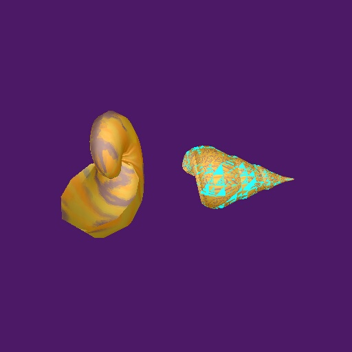

The left shell is texture-mapped with the 'shrinkwrap'(Intermediate Surface Normal Cylindrical) technique. The right with face-mapping. The left is to cheer the functionality of the shrinkwrap style, the right to display the non-functionality of my attempt at triangle filling face-mapping. My four sided face-mapping does work, as is illustrated later.